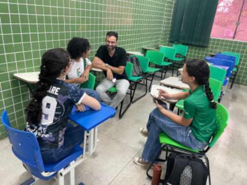
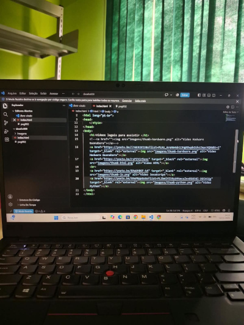
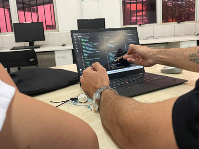

Sobre o Site
Conheça o IFísica
O IFísica é um projeto educacional desenvolvido com o propósito de facilitar a maneira como os estudantes aprendem e compreendem a Física. A iniciativa surgiu a partir da percepção das dificuldades enfrentadas por muitos alunos do ensino médio integrado do Instituto Federal do Tocantins (IFTO) durante o processo de aprendizagem da disciplina, especialmente na interpretação dos conceitos, na compreensão dos fenômenos físicos e na aplicação dos conhecimentos matemáticos envolvidos.
Considerando que a Física é uma área fundamental conclusão escolar, o projeto busca aproximar o conhecimento científico da realidade dos estudantes, tornando o aprendizado mais acessível e organizado. Para isso, utiliza a tecnologia como uma aliada da educação, oferecendo a proposta de um ambiente virtual que reúne diferentes recursos de estudo em um único espaço.
O IFísica foi idealizado para complementar o ensino tradicional, permitindo que os estudantes tenham acesso a materiais de apoio e atividades que contribuam para a revisão e a fixação dos conteúdos. Dessa maneira, a plataforma pretende proporcionar mais autonomia aos alunos, respeitando seus diferentes ritmos de aprendizagem e oferecendo novas possibilidades de contato com o conhecimento científico.
Nossa proposta

O principal objetivo do IFísica é desenvolver e disponibilizar um ambiente digital de apoio à aprendizagem, capaz de auxiliar os estudantes na compreensão dos conteúdos de Física e na superação das dificuldades encontradas durante o ensino da disciplina.
A plataforma busca centralizar diferentes ferramentas de estudo em um único espaço, facilitando o acesso aos materiais educacionais e proporcionando uma experiência de aprendizagem mais organizada e funcional. Dessa forma, pretende contribuir para a revisão dos conteúdos, o desenvolvimento do raciocínio lógico e a compreensão dos conceitos fundamentais da Física.
Inicialmente, o projeto possui como público-alvo os estudantes do primeiro ano do ensino médio integrado do Instituto Federal do Tocantins (IFTO), considerando as dificuldades frequentemente encontradas durante a transição para uma etapa de ensino que exige maior capacidade de interpretação, abstração e domínio matemático.

Desenvolvimento do Site
Para a construção do nosso site, utilizamos as linguagens de programação HTML e CSS. O HTML foi responsável pela estruturação do site, organizando os textos, títulos, imagens e demais conteúdos. Já o CSS foi utilizado para personalizar a aparência, definindo cores, fontes, tamanhos, espaçamentos e o layout das páginas.
Durante o desenvolvimento, trabalhamos na organização das informações e na apresentação visual do site, buscando deixá-lo agradável, organizado e fácil de navegar. A realização desse projeto nos proporcionou a oportunidade de colocar em prática os conhecimentos adquiridos sobre desenvolvimento web, além de desenvolver nossas habilidades com HTML e CSS.
